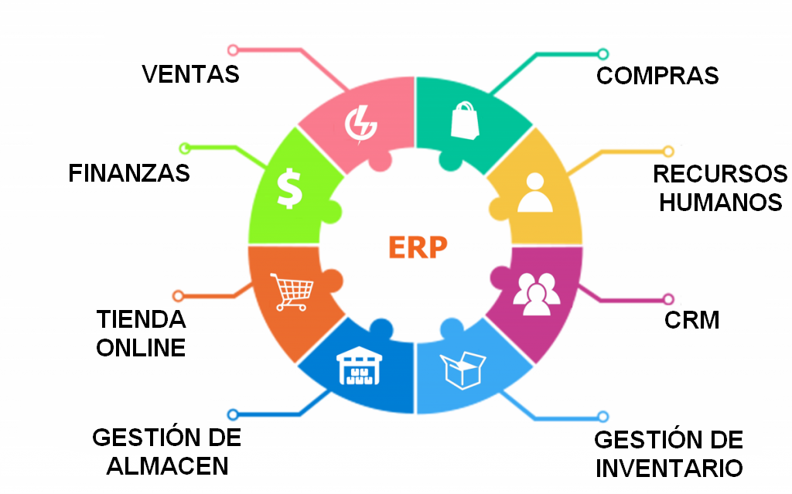

¿Qué es un ERP?
Un ERP (Enterprise Resource Planning) es un software que permite a las empresas controlar toda la información que se genera en cada ámbito de la organización.
¿Para qué sirve?
Sirve para ayudar a las organizaciones a optimizar sus procesos de negocio centralizándolos, reduciendo errores y aumentando su productividad.
¿Qué funciones realizan?
- Gestión de recursos empresariales: Coordinación de áreas clave mediante sistemas integrados para mejorar su funcionamiento.
- Automatización de procesos: Realización de tareas repetitivas de manera automática, reduciendo errores y tiempos.
- Control financiero y contabilidad: Administración precisa de ingresos, gastos y registros contables.
- Gestión de inventario y compras: Supervisión de existencias y adquisición de productos para asegurar disponibilidad y optimizar costos.
- Gestión de ventas y CRM: Organización de relaciones con clientes y seguimiento de ventas.
- Inteligencia empresarial y análisis: Recolección y análisis de datos para apoyar decisiones estratégicas.
- Mejora de la eficiencia operativa: Implementación de cambios para procesos más rápidos y efectivos.
- Optimización de procesos de negocio: Rediseño y ajuste de actividades empresariales para maximizar resultados.
¿Qué tipos de módulos hay? ¿Cómo los clasificarías? ¿Puedo instalar cualquier módulo?
Los módulos principales que podemos encontrar son:
- Finanzas y contabilidad
- Ventas y marketing
- Inventario
- Compras
- Producción
- Recursos Humanos
- Gestión de proyectos
- CRM o gestión de contactos
- Business Intelligence
No se puede instalar cualquier módulo, depende del ERP elegido, el plan contratado y las necesidades de la empresa.
¿Qué es la integración de módulos y por qué es beneficiosa?
Consiste en conectar y sincronizar diferentes componentes de un sistema para que funcionen juntos de manera coherente y eficiente. Es beneficiosa porque permite compartir y utilizar los datos en conjunto y en tiempo real, mejorando la eficiencia, la productividad y la calidad del sistema.
Estudio comparativo de productos ERP
Productos comparados:
 Odoo
Odoo
Características y funcionalidades
| Producto | Características principales | Funcionalidades destacadas |
|---|---|---|
| SAP ERP | Solución robusta y escalable para grandes empresas. | Finanzas, recursos humanos, gestión de la cadena de suministro, analítica avanzada. |
| Microsoft Dynamics 365 | Flexible, enfocado a pequeñas y medianas empresas. | Gestión financiera, CRM, operaciones, servicio al cliente, inteligencia empresarial. |
| Odoo | Modular, de código abierto, fácil de adaptar. | Ventas, compras, inventarios, RRHH, contabilidad, marketing digital, e-commerce. |
Requisitos
| Producto | Requisitos de hardware/software |
|---|---|
| SAP ERP | Servidor potente (RAM 16GB mínimo, CPU multinúcleo), base de datos HANA, sistema operativo Windows/Linux. |
| Microsoft Dynamics 365 | Servidor Windows Server, SQL Server, al menos 8 GB de RAM y CPU de 4 núcleos. |
| Odoo | Servidor Linux recomendado, 4 GB de RAM mínimo, PostgreSQL como base de datos. |
Orientación al mercado
| Producto | Sectores dirigidos |
|---|---|
| SAP ERP | Grandes corporaciones de todos los sectores (finanzas, manufactura, servicios, salud, etc.). |
| Microsoft Dynamics 365 | Empresas pequeñas y medianas en sectores como retail, servicios y fabricación. |
| Odoo | Startups, pequeñas y medianas empresas, comercios electrónicos, manufactura ligera, servicios profesionales. |
Tipos de licencias y precios
| Producto | Tipos de licencias | Precio aproximado |
|---|---|---|
| SAP ERP | Licencia perpetua o suscripción. | Desde 3.200€ por usuario (varía según configuración). |
| Microsoft Dynamics 365 | Suscripción mensual por usuario. | Desde 59€ a 180€ por usuario/mes (según el plan). |
| Odoo | Código abierto (comunidad) o suscripción (empresa). | Comunidad: Gratis. Empresa: Desde 20€ por usuario/mes + coste de módulos. |
Video: Introducción a los ERP
Conclusiones
Tras analizar diferentes sistemas ERP, podemos concluir que:
- SAP ERP es la mejor opción para grandes corporaciones que buscan soluciones personalizadas y muy robustas, aunque con un coste elevado.
- Microsoft Dynamics 365 se adapta perfectamente a pequeñas y medianas empresas que buscan flexibilidad e integración con otros productos de Microsoft.
- Odoo es una opción muy atractiva para pequeñas empresas y startups debido a su bajo coste, facilidad de adaptación y modularidad.